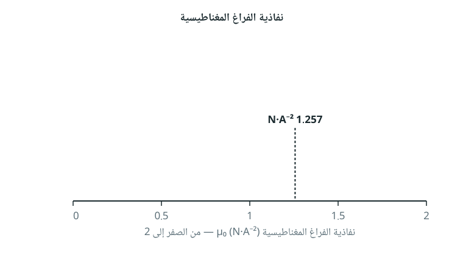

نفاذية الفراغ المغناطيسية
Vacuum magnetic permeability
نفاذية الفراغ المغناطيسية μ₀ هي ثابت التناسب بين كثافة التدفق المغناطيسي وشدة المجال المغناطيسي في الفراغ: B = μ₀·H. قيمتها من CODATA 2022 هي 1.256 637 061 27×10⁻⁶ N·A⁻²، ولم تعد تامة بعد إعادة تعريف الأمبير سنة 2019.
قبل سنة 2019 كان الأمبير يُعرَّف بقوة بين سلكين متوازيين، فكانت μ₀ تامة بالتعريف وتساوي 4π×10⁻⁷ N·A⁻² بالضبط. وبعد إعادة تعريف الأمبير بثابت الشحنة الأولية e صارت μ₀ كمية مقيسة لها عدم يقين نسبي 1.6×10⁻¹⁰. وتظهر μ₀ في قانون أمبير وفي سرعة الضوء: c = 1/√(μ₀ε₀)، فإذا عُرفت c وμ₀ عُرفت ε₀. مثال: كثافة تدفق مغناطيسي 0.500 T في الفراغ تقابل شدة مجال H = B/μ₀ = 0.500/1.2566×10⁻⁶ = 3.98×10⁵ A/m.
كيف تعمل الظاهرة؟
المجال المغناطيسي ينشأ من حركة الشحنات، وμ₀ تحدد كمّية المجال الناتج عن تيار معطى في الفراغ. وفي المادة تُضاف مغنطة الذرات إلى المجال فتتغير النفاذية إلى μ = μ₀(1+χ_m). والفراغ ليس فارغاً فعلياً في نظرية المجال الكمي: μ₀ وε₀ تصفان استجابة الخلاء للاضطراب الكهرومغناطيسي، وقيمتهما مرتبطة ببنية الفراغ لا بجسيمات موجودة فيه.
العلاقة بالأرقام
μ₀ = 1.256 637 061 27×10⁻⁶ N·A⁻²، وε₀ = 1/(μ₀c²) = 8.854 187 8128×10⁻¹² F/m. وقانون أمبير في الفراغ ∮B·dl = μ₀I. مثال: سلك مستقيم يحمل 10.0 A، عند مسافة 0.0500 m: B = μ₀I/(2πr) = 1.2566×10⁻⁶×10.0/(2π×0.0500) = 4.00×10⁻⁵ T = 40.0 μT.
مفاهيم متقاربة
يُفرَّق بين μ₀ وε₀: الأولى ثابت المجال المغناطيسي والثانية ثابت المجال الكهربائي، وكلتاهما مرتبطة بـc. ويُفرَّق بين النفاذية المطلقة μ والنفاذية النسبية μ_r: الأولى بوحدة H/m والثانية عدد. ويُفرَّق بين μ₀ وقابلية المادة المغناطيسية χ_m: الأولى خاصية الفراغ والثانية خاصية المادة. وأخيراً يُفرَّق بين μ₀ في نظام SI وμ₀ في الأنظمة الكهرومغناطيسية القديمة حيث كانت 1 بالتعريف.
حدود التطبيق
μ₀ لا تصف المواد المغناطيسية الحديدية حيث تعتمد النفاذية على شدة المجال وعلى التاريخ المغناطيسي (التخلفية). ولا تصف البلازما الممغنطة حيث تصبح النفاذية كمية موترة. ولا تُستعمل في حساب المجال داخل موصل فائق، حيث يُطرد المجال كلياً (تأثير مایسنر). وأخيراً لا تُستعمل μ₀ وحدها في حساب المجال في وسط مشتت، حيث تعتمد الاستجابة على التردد.

| الكمية | القيمة | المصدر |
|---|---|---|
| نفاذية الفراغ المغناطيسية μ₀ | 1.256 637 061 27×10⁻⁶ N·A⁻² | [1] |
| محاثة الملف اللولبي في المثال | 6.28×10⁻⁴ H | [1] |
المصادر
- 1 CODATA Value: vacuum magnetic permeability — NIST — CODATA 2022 recommended values (2024). physics.nist.gov/cgi-bin/cuu/Value?mu0 · اطُّلع عليه 2026-11-22
- 2 CODATA Value: speed of light in vacuum — NIST — CODATA 2022 recommended values (2024). physics.nist.gov/cgi-bin/cuu/Value?c · اطُّلع عليه 2026-11-22
استشهد بهذا المصطلح
الصيغتان مبنيتان من بيانات الصفحة نفسها: العنوان والتاريخ ورابط النسخة المنشورة.
نفاذية الفراغ المغناطيسية — Vacuum magnetic permeability. (2026). ديوان المعرفة — انفراد. https://infiradev.com/diwan/terms/term-vacuum-permeability.html
@misc{term-vacuum-permeability2026,
title = {نفاذية الفراغ المغناطيسية},
titleaddon = {Vacuum magnetic permeability},
howpublished = {{ديوان المعرفة — انفراد} — مرجع علمي عربي},
year = {2026},
url = {https://infiradev.com/diwan/terms/term-vacuum-permeability.html},
urldate = {2026-11-26},
note = {مراجعة علمية: hermes (مراجعة معتمدة 2026-11-26)}
}
راجعه: hermes (مراجعة معتمدة 2026-11-26) · 2026-11-26 · آخر تحديث 2026-11-22